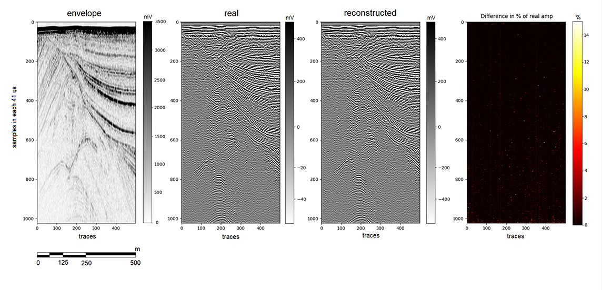
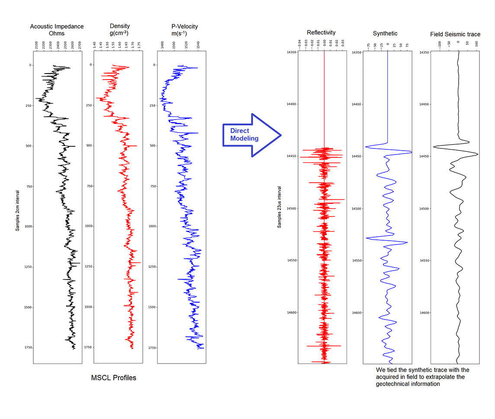
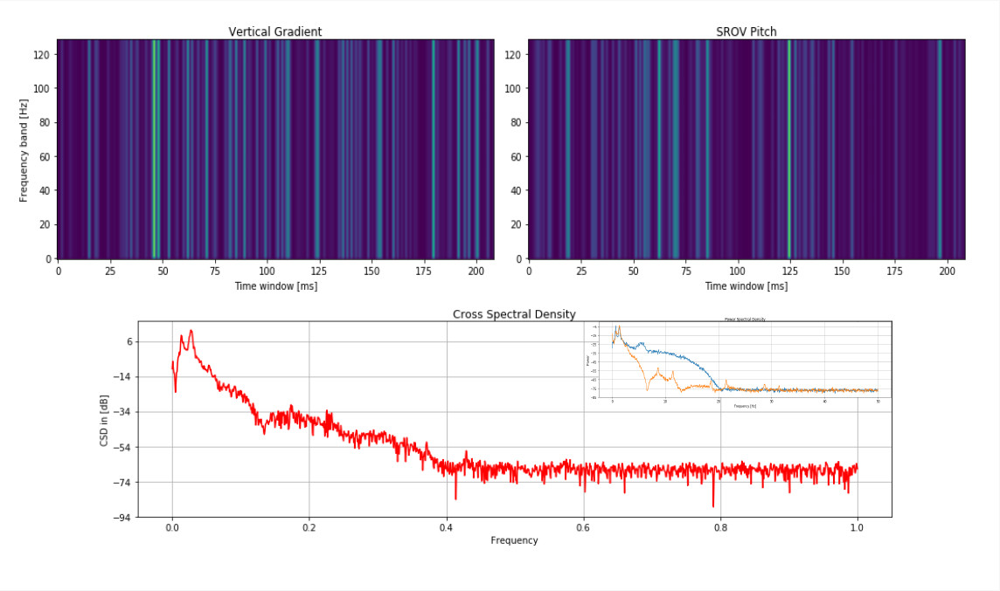
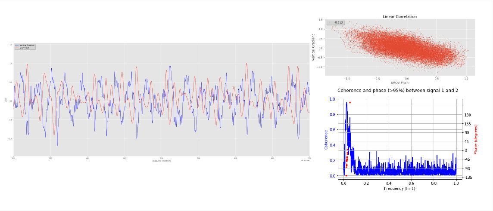
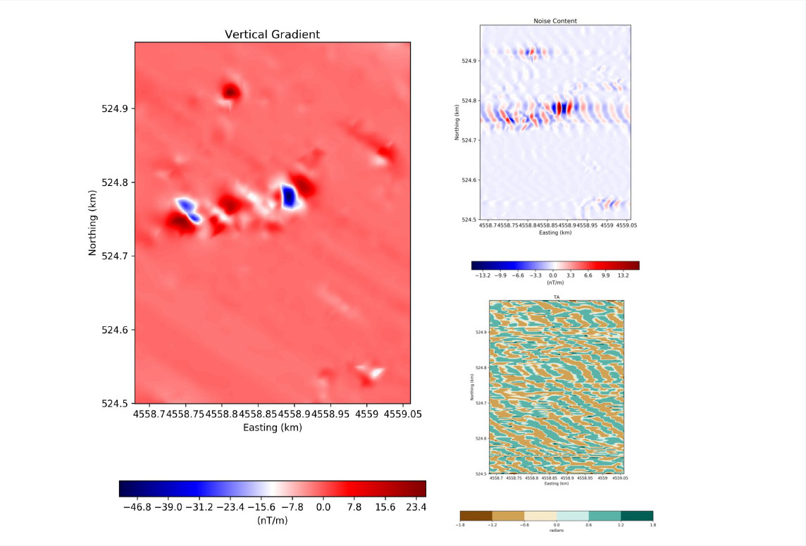
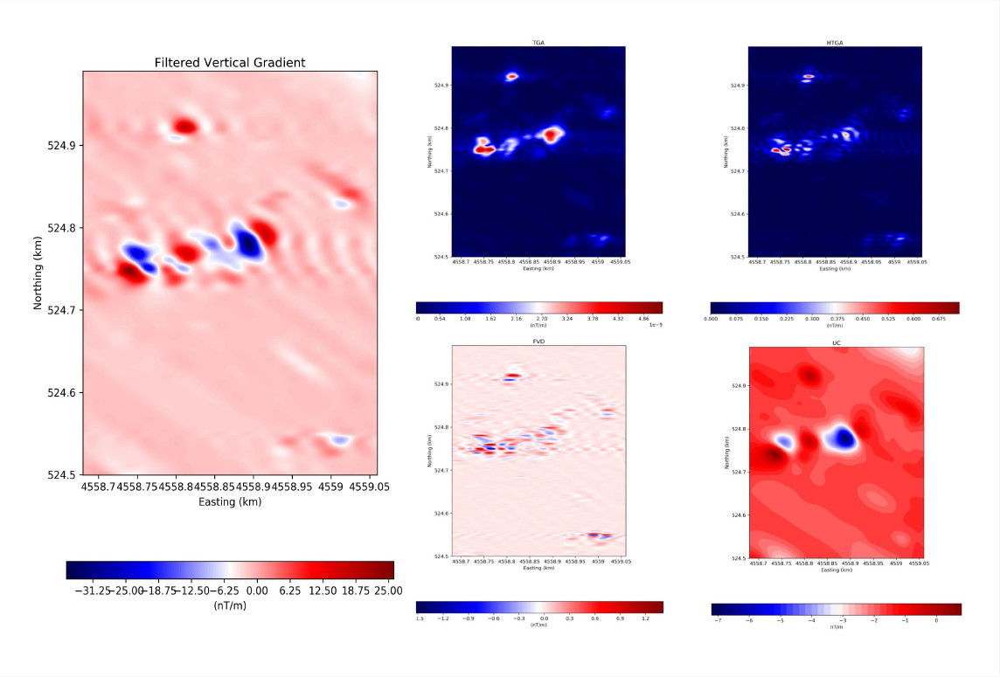
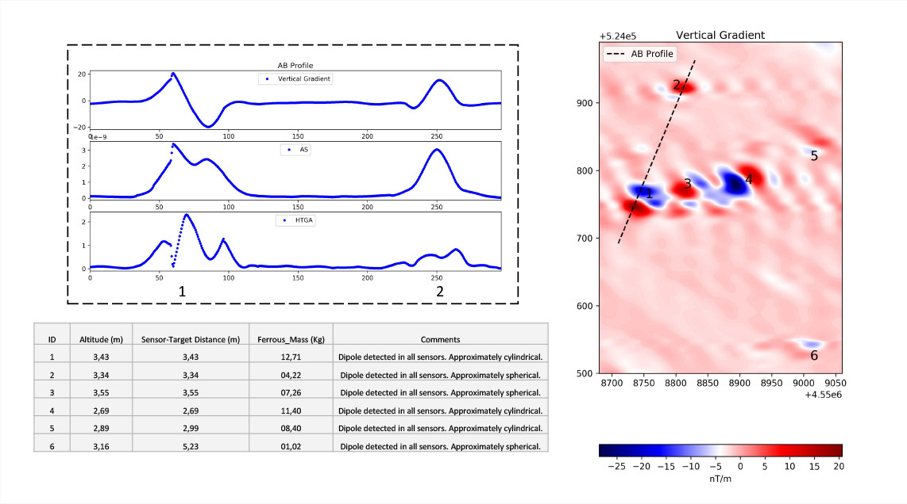

<!DOCTYPE html>
<html lang="en">
  <head>
    <meta charset="UTF-8">
    <meta http-equiv="X-UA-Compatible" content="IE=edge">
    <meta name="viewport" content="width=device-width, initial-scale=1.0">
    <title>Shallow Geo - Site</title>
    <link href="src/fonts/fontawesome-free-5.15.3-web/css/all.min.css" rel="stylesheet">
    <link href="src/css/styles.css" rel="stylesheet">
    <script src="https://code.jquery.com/jquery-3.6.0.min.js" integrity="sha256-/xUj+3OJU5yExlq6GSYGSHk7tPXikynS7ogEvDej/m4=" crossorigin="anonymous"></script>
    <script src="src/js/main.js"></script>
  </head>
  <body></body>
</html>
<header>
  <div class="container flex space-between">
    <section class="logo">
      <h1><a href="/"></a></h1>
    </section>
    <section class="menu">
      <ul>
        <li class="about has-submenu"><a href="#">about</a>
          <ul class="sub-menu">
            <li><a href="/about.html">history</a></li>
            <li><a href="/technology.html">Technology</a></li>
          </ul>
        </li>
        <li class="services"><a href="/services.html">services</a></li>
        <li class="contact"><a href="/contact.html">contact us</a></li>
        <li class="linkedin"><a href="https://www.linkedin.com/company/shallowgeo/" target="_blank"><i class="fab fa-linkedin"></i></a></li>
      </ul>
    </section>
  </div>
</header><span class="before"></span>
<main class="tech">
  <section class="top">
    <div class="container flex space-between">
      <div>
        <h1>
           Technology</h1>
        <p>Shallowgeo uses technologies designed by its R&D department to solve geophysical and geological problems by enhancing image quality of acoustic and magnetic data: </p>
      </div>
      <div></div>
    </div>
  </section>
  <section class="content">
    <div class="container">
      <h2>We recover full seismic waveform from enveloped sub-bottom profiler data.</h2>
      <p>"... Seismic acquisitions performed in the past with sub-bottom profilers were stored only as seismic envelope (Instantaneous amplitude) instead of the seismic waveform, and it led to a massive amount of legacy data without phase information. To retrieve the seismic waveform from an envelope, we introduce the un-envelope algorithm based on two deep convolutional neural networks. It achieves a reconstruction with at least 98% of matching. The main objective of retrieving the full seismic waveform from an envelope data is the use of seismic attributes on it to improve the resolution and accuracy of geological interpretations..."</p>
      <h2>We perform direct and inversion modeling using MSCL (Multi-Sensor Core Logger) profiles and ultra-high resolution seismic data to help produce high-fidelity ground models. </h2>
      <p>"... Geological inversions and direct modeling aid in interpretation of shallow marine environments, extending the validation of geological samples through the seismic horizons. It also helps geotechnical departments to reduce the risk on geohazard analyses..."</p>
      <h2>We customize filters to denoise mag data using machine learning approach</h2>
      <p>"The magnetic field data acquired by marine magnetometers from towed, ROV and AUV systems is strongly contaminated by motion artefacts. Here, we propose a set of techniques to discriminate noise contents by using linear and non-linear analysis and filter customization capable of removing unwanted signals "</p>
      <h2>We compute magnetic attributes to enhance image quality and determine interactively target locations</h2>
      <p>"The application of magnetic attributes enhances image quality and improves significantly anomalies detection. By producing 4 or more enhancement maps, the interpreter can interactively pick targets."</p>
      <h2>We perform forward and inversion modeling of magnetic data to characterize targets and evaluate their potential risks</h2>
      <p>"In order to understand the risks offered by a man made hazard as an UXO, we use forward and inversion modeling to estimate burial depth and ferrous mass. "</p>
    </div>
  </section>
</main>
<footer>
  <div class="container">
    <h1>Contact</h1>
    <div class="row flex flex-wrap">
      <div class="left">
        <section class="office flex space-between">
          <div class="br"> 
            <div class="contact"> 
              <div class="title">Brazil Office </div>+55 21 3356-5699 <br>
              info@shallowgeo.com
            </div>
          </div>
          <div class="pt">
            <div class="contact"> 
              <div class="title">Portugal Office </div>+351 961 304 470 <br>
              info@shallowgeo.com
            </div>
          </div>
        </section>
      </div>
      <div class="right">
        <section class="f-menu"> 
          <ul> 
            <li> <a href="">about </a></li>
            <li> <a href="">services </a></li>
            <li> <a href="">contact us</a></li>
          </ul>
        </section>
      </div>
      <section class="social flex"><i class="fab fa-linkedin"></i>
        <div>
          <h2>Social networks:</h2><a href="http://linkedin.com/company/shallowgeo"> www.linkedin.com/company/shallowgeo</a>
        </div>
      </section>
    </div>
  </div>
  <section class="copyright"> 
    <div class="container"> 
      <p>© Copyright 2021 Shallow Geo. All rights reserved.</p>
    </div>
  </section>
</footer>